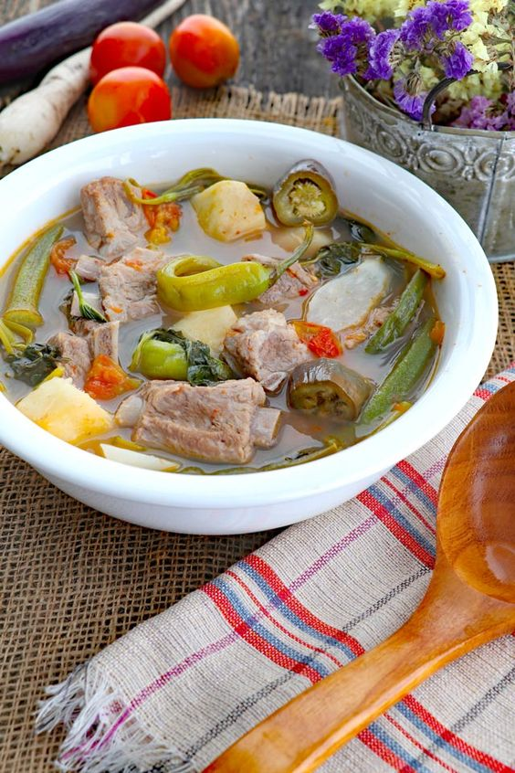

"Tangy Comfort: Exploring the Delights of Sinigang"
Ingredients:
- 500g pork ribs or pork belly, cut into bite-sized pieces
- 1 large tomato, quartered
- 1 medium onion, quartered
- 2-3 pieces green chili peppers (siling haba)
- 1 medium daikon radish (labanos), peeled and sliced
- 1 medium eggplant, sliced
- 1 bunch kangkong (water spinach) or spinach, trimmed
- 8-10 cups water
- Salt and pepper, to taste
- Salt, to taste
- 10-12 pieces tamarind pods or 2 tablespoons tamarind powder
Procedure:
-
Prepare the Tamarind Broth: If using tamarind pods, place them in a bowl
and pour hot water over them. Let them soak for about 15-20 minutes.
Using clean hands, squeeze the tamarind pods to extract the juice,
then strain the liquid to remove seeds and fibers.
If using tamarind powder, dissolve it in water. Set the tamarind broth aside.
-
Boil the Pork: In a large pot, add the pork ribs or pork belly pieces and pour enough
water to cover the meat. Bring to a boil over medium-high heat, skimming off any foam
that rises to the surface. Reduce the heat to medium-low and let the pork simmer until
tender, about 40-50 minutes.
-
Add Vegetables: Once the pork is tender, add the tomatoes, onions, and green chili peppers to the pot.
Let them simmer for about 5 minutes until slightly softened.
-
Incorporate Tamarind Broth: Pour the prepared tamarind broth into the pot, stirring well to combine.
Bring the mixture back to a gentle boil.
-
Season to Taste: Season the sinigang with fish sauce (patis), salt, and pepper to taste.
Adjust the seasoning according to your preference. For a more sour taste,
you can add more tamarind broth.
-
Once all the vegetables are cooked and tender, remove the pot from the heat. Serve the sinigang hot
in individual bowls, along with steamed rice. Enjoy the comforting and tangy flavors of
this classic Filipino dish!